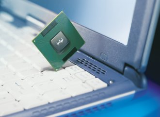
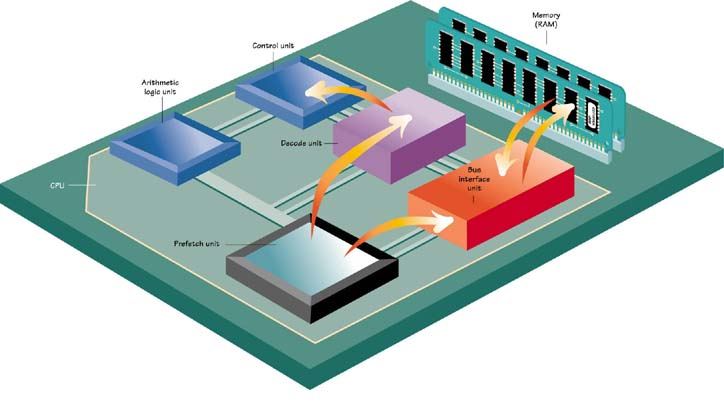
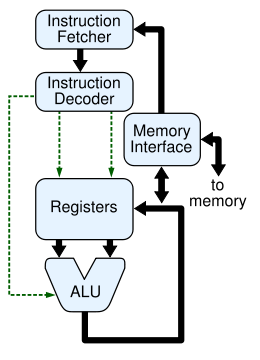
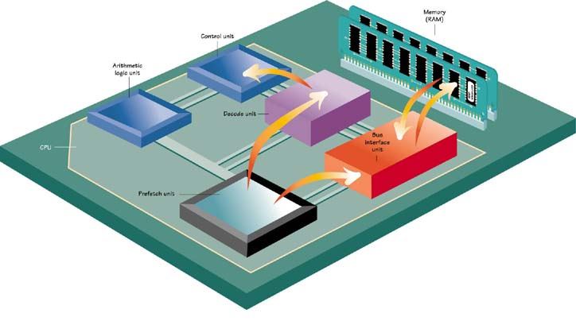
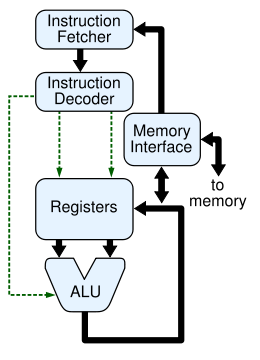

How does CPU works?
CPU is a brain of a computer. It called Central Process Unit. CPU fetches and executes instructions. CPU consists of an Arithmetic and Logic Unit (ALU), a control unit, registers and buses.

Control Unit: controls CPU operations, including ALU operations, the movement of data within the CPU, and the exchange of data and control signals across external interfaces(e.g.,the system bus)
Registers: these components are special memory locations that can be accessed very fast. Three registers are shown: the Instruction Register (IR), the Program Counter (PC), and the Accumulator.
Buses: these components are the information highway for the CPU. Buses are bundles of tiny wires that carry data between components. The three most important buses are the address, the data, and the control buses.
 This picture show the components as the CPU too. CPUs improved in the time. The introduction of the microprocessor in the 1970s significantly affected the design and implementation of CPUs. Since the introduction of the first microprocessor (the Intel 4004) in 1970 and the first widely used microprocessor (the Intel 8080) in 1974, this class of CPUs has almost completely overtaken all other central processing unit implementation methods. Mainframe and minicomputer manufacturers of the time launched proprietary IC development programs to upgrade their older computer architectures, and eventually produced instruction set compatible microprocessors that were backward-compatible with their older hardware and software. Combined with the advent and eventual vast success of the now ubiquitous personal computer, the term "CPU" is now applied almost exclusively to microprocessors.
Previous generations of CPUs were implemented as discrete components and numerous small integrated circuits (ICs) on one or more circuit boards. Microprocessors, on the other hand, are CPUs manufactured on a very small number of ICs; usually just one. The overall smaller CPU size as a result of being implemented on a single die means faster switching time because of physical factors like decreased gate parasitic capacitance. This has allowed synchronous microprocessors to have clock rates ranging from tens of megahertz to several gigahertz. Additionally, as the ability to construct exceedingly small transistors on an IC has increased, the complexity and number of transistors in a single CPU has increased dramatically. This widely observed trend is described by Moore's law, which has proven to be a fairly accurate predictor of the growth of CPU (and other IC) complexity to date.
While the complexity, size, construction, and general form of CPUs have changed drastically over the past sixty years, it is notable that the basic design and function has not changed much at all. Almost all common CPUs today can be very accurately described as von Neumann stored-program machines.
As the aforementioned Moore's law continues to hold true, concerns have arisen about the limits of integrated circuit transistor technology. Extreme miniaturization of electronic gates is causing the effects of phenomena like electromigration and subthreshold leakage to become much more significant. These newer concerns are among the many factors causing researchers to investigate new methods of computing such as the quantum computer, as well as to expand the usage of parallelism and other methods that extend the usefulness of the classical von Neumann model. All von Neumann CPU use for operation fetch,decode,execute and writeback.
The first step, fetch, involves retrieving an instruction (which is represented by a number or sequence of numbers) from program memory. The location in program memory is determined by a program counter (PC), which stores a number that identifies the current position in the program. In other words, the program counter keeps track of the CPU's place in the current program. After an instruction is fetched, the PC is incremented by the length of the instruction word in terms of memory units. Often the instruction to be fetched must be retrieved from relatively slow memory, causing the CPU to stall while waiting for the instruction to be returned. This issue is largely addressed in modern processors by caches and pipeline architectures .
 The instruction that the CPU fetches from memory is used to determine what the CPU is to do. In the decode step, the instruction is broken up into parts that have significance to other portions of the CPU. The way in which the numerical instruction value is interpreted is defined by the CPU's instruction set architecture (ISA).Often, one group of numbers in the instruction, called the opcode, indicates which operation to perform. The remaining parts of the number usually provide information required for that instruction, such as operands for an addition operation. Such operands may be given as a constant value (called an immediate value), or as a place to locate a value: a register or a memory address, as determined by some addressing mode. In older designs the portions of the CPU responsible for instruction decoding were unchangeable hardware devices. However, in more abstract and complicated CPUs and ISAs, a microprogram is often used to assist in translating instructions into various configuration signals for the CPU. This microprogram is sometimes rewritable so that it can be modified to change the way the CPU decodes instructions even after it has been manufactured.
After the fetch and decode steps, the execute step is performed. During this step, various portions of the CPU are connected so they can perform the desired operation. If, for instance, an addition operation was requested, an arithmetic logic unit (ALU) will be connected to a set of inputs and a set of outputs. The inputs provide the numbers to be added, and the outputs will contain the final sum. The ALU contains the circuitry to perform simple arithmetic and logical operations on the inputs (like addition and bitwise operations). If the addition operation produces a result too large for the CPU to handle, an arithmetic overflow flag in a flags register may also be set .
The final step, writeback, simply "writes back" the results of the execute step to some form of memory. Very often the results are written to some internal CPU register for quick access by subsequent instructions. In other cases results may be written to slower, but cheaper and larger, main memory. Some types of instructions manipulate the program counter rather than directly produce result data. These are generally called "jumps" and facilitate behavior like loops, conditional program execution (through the use of a conditional jump), and functions in programs. Many instructions will also change the state of digits in a "flags" register. These flags can be used to influence how a program behaves, since they often indicate the outcome of various operations. For example, one type of "compare" instruction considers two values and sets a number in the flags register according to which one is greater. This flag could then be used by a later jump instruction to determine program flow.
After the execution of the instruction and writeback of the resulting data, the entire process repeats, with the next instruction cycle normally fetching the next-in-sequence instruction because of the incremented value in the program counter. If the completed instruction was a jump, the program counter will be modified to contain the address of the instruction that was jumped to, and program execution continues normally. In more complex CPUs than the one described here, multiple instructions can be fetched, decoded, and executed simultaneously. This section describes what is generally referred to as the "Classic RISC pipeline" which in fact is quite common among the simple CPUs used in many electronic devices (often called microcontrollers)
Parts of CPU :
ALU: is a digital circuit that calculates an arithmetic operation (like an addition, subtraction, etc.) and logic operations (like an Exclusive Or) between two numbers. the ALU is a fundamental building block of the central processing unit of a computer.Control Unit: controls CPU operations, including ALU operations, the movement of data within the CPU, and the exchange of data and control signals across external interfaces(e.g.,the system bus)
Registers: these components are special memory locations that can be accessed very fast. Three registers are shown: the Instruction Register (IR), the Program Counter (PC), and the Accumulator.
Buses: these components are the information highway for the CPU. Buses are bundles of tiny wires that carry data between components. The three most important buses are the address, the data, and the control buses.
How the CPU works??
A computer have a brain and we call it CPU. Firstly , we describe the CPU and its component. After we look into how does the CPU works and CPU evolutaion in a time. We can show it in this picture; This picture show the components as the CPU too. CPUs improved in the time. The introduction of the microprocessor in the 1970s significantly affected the design and implementation of CPUs. Since the introduction of the first microprocessor (the Intel 4004) in 1970 and the first widely used microprocessor (the Intel 8080) in 1974, this class of CPUs has almost completely overtaken all other central processing unit implementation methods. Mainframe and minicomputer manufacturers of the time launched proprietary IC development programs to upgrade their older computer architectures, and eventually produced instruction set compatible microprocessors that were backward-compatible with their older hardware and software. Combined with the advent and eventual vast success of the now ubiquitous personal computer, the term "CPU" is now applied almost exclusively to microprocessors.
Previous generations of CPUs were implemented as discrete components and numerous small integrated circuits (ICs) on one or more circuit boards. Microprocessors, on the other hand, are CPUs manufactured on a very small number of ICs; usually just one. The overall smaller CPU size as a result of being implemented on a single die means faster switching time because of physical factors like decreased gate parasitic capacitance. This has allowed synchronous microprocessors to have clock rates ranging from tens of megahertz to several gigahertz. Additionally, as the ability to construct exceedingly small transistors on an IC has increased, the complexity and number of transistors in a single CPU has increased dramatically. This widely observed trend is described by Moore's law, which has proven to be a fairly accurate predictor of the growth of CPU (and other IC) complexity to date.
While the complexity, size, construction, and general form of CPUs have changed drastically over the past sixty years, it is notable that the basic design and function has not changed much at all. Almost all common CPUs today can be very accurately described as von Neumann stored-program machines.
As the aforementioned Moore's law continues to hold true, concerns have arisen about the limits of integrated circuit transistor technology. Extreme miniaturization of electronic gates is causing the effects of phenomena like electromigration and subthreshold leakage to become much more significant. These newer concerns are among the many factors causing researchers to investigate new methods of computing such as the quantum computer, as well as to expand the usage of parallelism and other methods that extend the usefulness of the classical von Neumann model. All von Neumann CPU use for operation fetch,decode,execute and writeback.
The first step, fetch, involves retrieving an instruction (which is represented by a number or sequence of numbers) from program memory. The location in program memory is determined by a program counter (PC), which stores a number that identifies the current position in the program. In other words, the program counter keeps track of the CPU's place in the current program. After an instruction is fetched, the PC is incremented by the length of the instruction word in terms of memory units. Often the instruction to be fetched must be retrieved from relatively slow memory, causing the CPU to stall while waiting for the instruction to be returned. This issue is largely addressed in modern processors by caches and pipeline architectures .
 The instruction that the CPU fetches from memory is used to determine what the CPU is to do. In the decode step, the instruction is broken up into parts that have significance to other portions of the CPU. The way in which the numerical instruction value is interpreted is defined by the CPU's instruction set architecture (ISA).Often, one group of numbers in the instruction, called the opcode, indicates which operation to perform. The remaining parts of the number usually provide information required for that instruction, such as operands for an addition operation. Such operands may be given as a constant value (called an immediate value), or as a place to locate a value: a register or a memory address, as determined by some addressing mode. In older designs the portions of the CPU responsible for instruction decoding were unchangeable hardware devices. However, in more abstract and complicated CPUs and ISAs, a microprogram is often used to assist in translating instructions into various configuration signals for the CPU. This microprogram is sometimes rewritable so that it can be modified to change the way the CPU decodes instructions even after it has been manufactured.
After the fetch and decode steps, the execute step is performed. During this step, various portions of the CPU are connected so they can perform the desired operation. If, for instance, an addition operation was requested, an arithmetic logic unit (ALU) will be connected to a set of inputs and a set of outputs. The inputs provide the numbers to be added, and the outputs will contain the final sum. The ALU contains the circuitry to perform simple arithmetic and logical operations on the inputs (like addition and bitwise operations). If the addition operation produces a result too large for the CPU to handle, an arithmetic overflow flag in a flags register may also be set .
The final step, writeback, simply "writes back" the results of the execute step to some form of memory. Very often the results are written to some internal CPU register for quick access by subsequent instructions. In other cases results may be written to slower, but cheaper and larger, main memory. Some types of instructions manipulate the program counter rather than directly produce result data. These are generally called "jumps" and facilitate behavior like loops, conditional program execution (through the use of a conditional jump), and functions in programs. Many instructions will also change the state of digits in a "flags" register. These flags can be used to influence how a program behaves, since they often indicate the outcome of various operations. For example, one type of "compare" instruction considers two values and sets a number in the flags register according to which one is greater. This flag could then be used by a later jump instruction to determine program flow.
After the execution of the instruction and writeback of the resulting data, the entire process repeats, with the next instruction cycle normally fetching the next-in-sequence instruction because of the incremented value in the program counter. If the completed instruction was a jump, the program counter will be modified to contain the address of the instruction that was jumped to, and program execution continues normally. In more complex CPUs than the one described here, multiple instructions can be fetched, decoded, and executed simultaneously. This section describes what is generally referred to as the "Classic RISC pipeline" which in fact is quite common among the simple CPUs used in many electronic devices (often called microcontrollers)